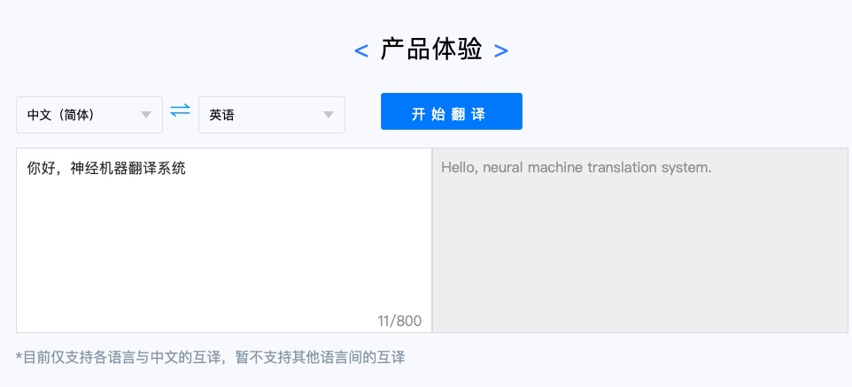
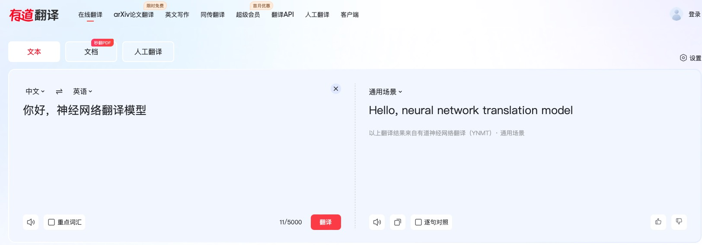
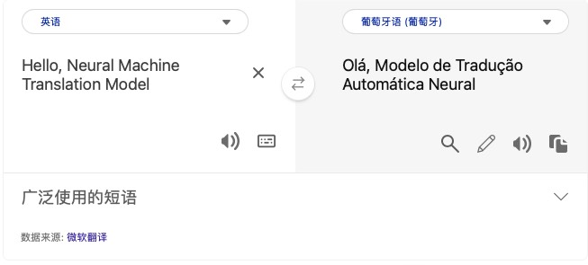
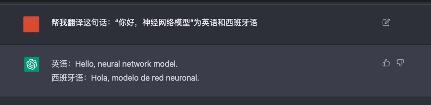

神经机器翻译落地产品
本栏将简单列举目前在市面上已经落地了的神经翻译语言模型
科大讯飞
仅支持中文和其他各国语言互译。

网易
支持多国语言互译，同时能够根据不同的使用场景（计算机、金融等）得到不同的翻译内容，同时可以根据文档，文本等不同场景提供翻译服务。
微软
嵌入必应（Bing）浏览器，支持多国语言互译。
ChatGPT
ChatGPT是由Open AI研发的通用型人工智能，专门为用户提供各种语言方面的帮助和支持。我可以为你提供翻译、语法纠正、文章创作等多方面的服务。
